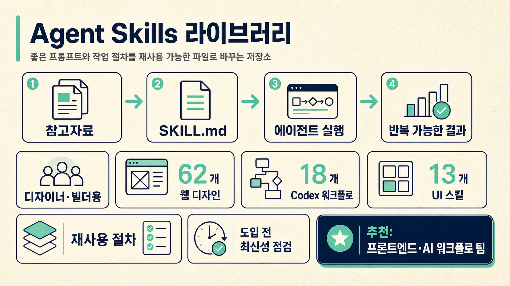

WHY IT MATTERS
좋은 에이전트 작업을 매번 새로 설명하지 않게 해줍니다.
반복 절차 저장
프롬프트, 체크리스트, 금지사항, 검증 기준을 `SKILL.md`로 보관합니다.
디자인 품질 보정
웹 디자인, UI 취향, 모션, 레이아웃 스킬이 많은 비중을 차지합니다.
도구 독립성
Codex, Claude, Cursor 등 여러 에이전트가 읽을 수 있는 폴더 기반 구조입니다.

디자이너와 빌더가 좋은 프롬프트·작업 절차·UI 구현 패턴을 재사용 가능한 Agent Skill 파일로 축적하고, Codex·Claude·Cursor 등 여러 AI 코딩 에이전트에서 반복 실행하도록 돕는 저장소입니다.